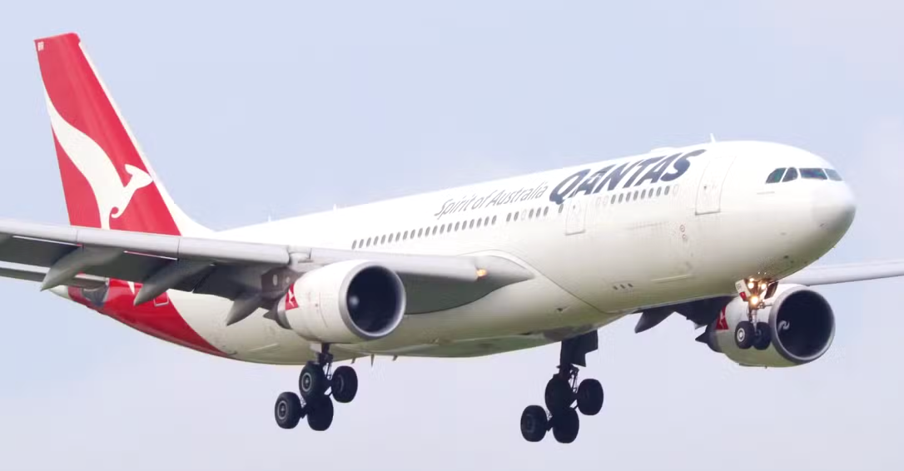

FLIGHT CONTROL SYSTEMS
Qantas Flight 72
For everyone who asks me why I’m afraid of flying...
On October 7, 2008, an Airbus A330-303 departed from Singapore Changi Airport for Perth, Australia. During the flight, a serious in-flight control event forced the aircraft to make an emergency landing at Learmonth Airport in Western Australia. None of the 303 passengers or 12 crew members on board were killed; however, many people were injured as a result of the incident.

What Happened?
Qantas Flight 72 was cruising normally at FL370 (37,000 ft) when one of the aircraft’s three Air Data Inertial Reference Units (ADIRUs), ADIRU 1, began sending intermittent erroneous data to the aircraft’s systems. Shortly afterward, the autopilot disconnected, and the pilots were presented with numerous warning and caution messages, many of which indicated faults that did not actually exist.
The pilots re-engaged Autopilot 2; however, it disconnected again shortly afterward. Approximately one minute later, the aircraft experienced a sudden, uncommanded nose-down pitch. The pitch angle reached approximately −8.4°, and the aircraft lost about 650 ft of altitude.
During the sudden pitch-down maneuver, the aircraft experienced a normal acceleration of approximately −0.8 g. As a result, particularly unrestrained passengers and crew members were thrown toward the cabin ceiling, with some sustaining serious injuries after striking the ceiling and overhead baggage compartments.
After the pilots regained control of the aircraft, it was brought back to approximately FL370. However, a few minutes later, a second, smaller uncommanded pitch-down event occurred. The crew continued the flight under manual control, decided to divert to Learmonth Airport, and landed the aircraft safely.
There were no fatalities. However, at least 110 of the 303 passengers and 9 of the 12 crew members were injured, with 12 people sustaining injuries classified as serious.
One of the most notable features of the A330 is its fly-by-wire flight control system, which has become a defining characteristic of Airbus aircraft. Although fly-by-wire technology is now widely used in modern commercial aircraft, Airbus remains one of the manufacturers most closely associated with the concept.
Understanding the Airbus A330
The A330 is Airbus’s family of long-range, twin-engine, wide-body passenger aircraft. First flown in 1992, the A330 was developed as a continuation of Airbus’s earlier wide-body aircraft programs, drawing particularly on experience gained from the A300 and A310.
The A330 uses the digital fly-by-wire flight control philosophy introduced into service by Airbus with the A320 family. In terms of cockpit layout and flight control systems, it continues Airbus’s common design philosophy across its aircraft families.
The original A330 family was offered with three different engine options: the General Electric CF6-80E1, Pratt & Whitney PW4000, and Rolls-Royce Trent 700. The later A330neo family, however, is powered exclusively by Rolls-Royce Trent 7000 engines.
Today, the A330 family remains in production through the A330neo generation, which consists of the A330-800 and A330-900 variants.
A First Look at the Accident
During cruise flight, an aircraft suddenly pitching nose-down without any pilot input might initially suggest that the flight control system was attempting to protect the aircraft from a potentially hazardous flight condition. For example, if the angle of attack reaches a critical level, Airbus’s fly-by-wire system can limit pilot control inputs to prevent the aircraft from entering the stall region and attempt to keep the angle of attack within a safe range.
However, in the case of Qantas Flight 72, we know that the aircraft was not actually approaching a stall. Furthermore, the autopilot was not engaged when the first sudden pitch-down event occurred.
This raises an important question: if the pilots did not command the nose-down movement and the autopilot was disengaged, what commanded the elevators to move the aircraft nose-down?
To answer this question, we first need to examine how the A330 collects flight data from the outside environment and how that information reaches the aircraft’s flight control computers.
Lessons Learned
Buraya sonuç kısmını yazacağım.